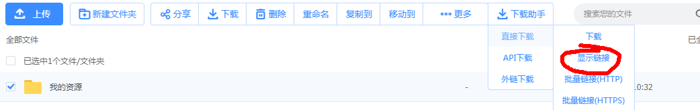

百度网盘的限制越来越多，超级会员加速2M/s，普通下载100k/s的事情越来越多。本文就分享一种能够不使用云盘下载的方法。
1、下载 chrome 和IDM。（两者均百度搜索就可以。）
2、下载一个tampermonkey for chrome的插件（百度搜索也可以，chrome应用里面搜也可以。）。
3、装完tampermonkey，点击网址：tampermonkey 安装一个百度网盘下载助手。
4、17年五月份的时候百度更新了技术导致直接下载这个助手就无法出现下载助手四个字。
在chrome里面左键tampermonkey的标志点击仪表盘（管理界面），然后右键百度网盘下载助手，会跳转到代码。直接拖拽到490行。
将$('div.'+wordMap['default-dom']+'div.'+wordMap['bar']+'div.'+wordMap['list-tools']).append($dropdownbutton);
改成 $('div.'+wordMap['list-tools']).append($dropdownbutton);
5、安装idm，初次使用IDM，它会教你如何在chrome上使用它。按照图示做就好了。（打开chrome扩展程序管理，在IDM那边选择启用即可。）
6、打开百度网盘网页，选中一个文件，点击下载助手，显示链接。然后右键链接选择IDM下载。
